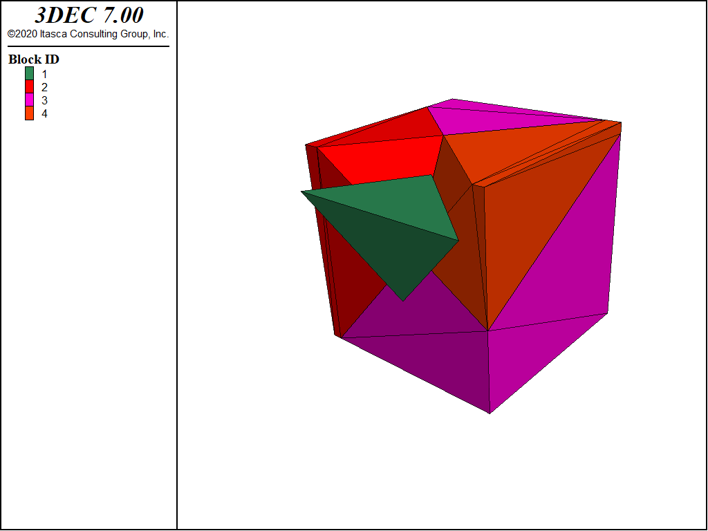
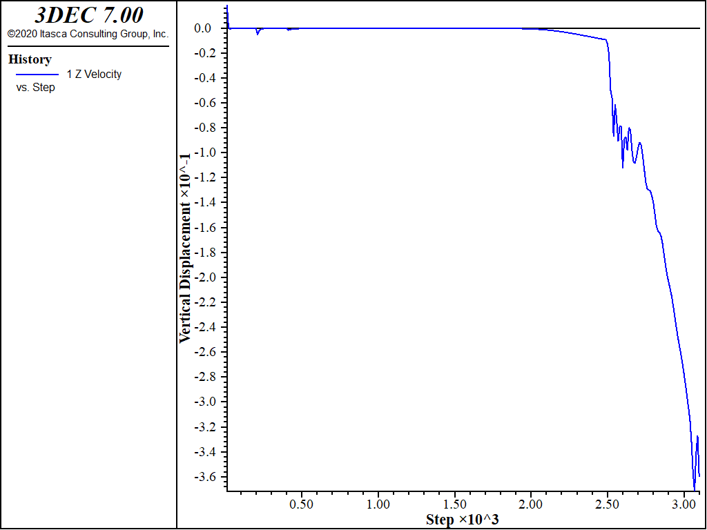

滑动楔体
问题描述
注意
要在 3DEC 中查看此项目，请使用菜单命令 。选择“3DEC/ VerificationProblems/ Sliding_Wedge”，然后选择“wedge.prj”进行加载。所用的主数据文件（main data files）显示在本示例的末尾。所有数据文件都可在该项目中找到。
利用 3DEC 分析岩体中由两个相交平面在重力作用下形成的楔体的稳定性。该楔体由两个结构面形成，其定义为：
A：倾角 = 40°，倾向 = 130°
B：倾角 = 60°，倾向 = 220°
两个平面假定具有相同的力学属性。
解析解
Hoek 和 Bray（1977）给出了经典的楔体稳定性分析。对于内摩擦角相同的无黏聚力节理，楔体的安全系数 \(F\) 与其尺寸无关，可由下式计算
其中 \(R_A\) 为垂直于平面 A 的反力，\(R_B\) 为垂直于平面 B 的反力，\(\phi\) 为节理的内摩擦角，\(W\) 为楔体的重量，\(\psi\) 为（节理 A 与 B 之间）交线相对于水平面的倾角。由上式可计算给楔体的临界摩擦角（此时楔体处于极限平衡）。该解由 FISH 函数 安全系数计算函数（f _safety） 实现（见数据文件“SAFETY.FIS”（data file “SAFETY.FIS”）），并将结果与 3DEC 计算进行对比。
3DEC 模型
图 1（Figure 1）所示的 3DEC 模型由四个刚性块体组成。其中三个块体被固定，只有孤立的楔体可在重力作用下运动。为该模型选取的力学属性为：
密度：\(\rho\) = 2000 kg/m3
节理剪切与法向刚度：\(K_n\) = \(K_s\) = 10 MPa/m
重力加速度：\(g\) = 10 m/sec2
楔体有两个面与相邻块体的面接触。楔体后部的棱边与两个后部块体的交面接触。对这三个接触均赋予 10 MPa/m 的节理剪切和法向刚度。首先将两个平面上的摩擦设为高值并施加自适应全局阻尼，使楔体在其自重下压密稳定。然后降低摩擦直至发生破坏。楔体竖向速度的历史记录（如图 2（Figure 2）所示）清楚地表明了发生失稳的模拟步。图 1（Figure 1）显示了发展中的破坏机制。模拟所用的数据文件见数据文件“WEDGE.DAT”（data file “WEDGE.DAT”）。
结果与讨论
注意，该问题为静定问题且与尺寸无关。因此，节理刚度和密度不影响解（即临界摩擦角）。使用 3DEC 计算得到临界摩擦角 \(\phi\) = 33.12°，与解析解 \(\phi\) = 33.36° 相比，数值解的误差仅为 0.7%。


图 1：滑动楔体模型。


图 2：楔体竖向速度的历史记录。
参考文献
Hoek, E., and J.W. Bray. Rock Slope Engineering, 2nd Ed. London: Inst. of Mining & Metallurgy (1977).
数据文件
wedge.dat
;===================================================
; 验证试验——滑动楔体
; 节理黏聚力为零，摩擦角相等
;===================================================
model new
model random 10000
model large-strain on
fish def params
global dip1_ = 40
global dd1_ = 130
global dip2_ = 60
global dd2_ = 220
end
[params]
program call 'safety.fis'
[safety]
block create brick -1 1 -1 1 -1 1
; 创建两条相交节理
block cut joint-set dip-direction [dd1_] dip [dip1_] origin 0 0 1
block cut joint-set dip-direction [dd2_] dip [dip2_] origin 0 -0.25 1
; 生成子接触
block contact generate-sub
; 参数
block property density 2e-3
block contact property stiffness-normal 10 stiffness-shear 10 friction 89
block contact material-table default property stiffness-normal 10 ...
stiffness-shear 10
; 固定其余三个块体并施加重力
block fix range position-z -1 0.8
model gravity 0 0 -10
block mechanical damping global
block hide range position-z -1 0.8
block hist vel-z pos .25 -1 .2935
block hide off
; 采用较大摩擦角，在重力作用下平衡
history name '1' label 'Z Velocity'
model cycle 200
; 将摩擦角降至 35，保持稳定
block contact property friction 35.00
model cycle 200
; 将摩擦角降至 33.34，保持稳定
block contact property friction 33.34
model cycle 400
; 将摩擦角降至 33.18，保持稳定
block contact property friction 33.18
model cycle 800
model save 'wedge_stable'
; 将摩擦角降至 33.16，发生破坏
block contact property friction 33.16
model cycle 1500
model save 'wedge_unstable'
[fric3_ = 33.16]
fish define error_
error_ = (fric_-fric3_)/fric_
end
fish list [error_]
program return
safety.fis
fish define safety
local d3_ = math.sin(dip1_*math.degrad)
local d1_ = -math.cos(dip1_*math.degrad)*math.sin(dd1_*math.degrad)
local d2_ = -math.cos(dip1_*math.degrad)*math.cos(dd1_*math.degrad)
local s1_ = math.sin((dd1_+90.)*math.degrad)
local s2_ = math.cos((dd1_+90.)*math.degrad)
local s3_ = 0.
;
; --- 平面 A 的法向
;
local n11_ = d2_*s3_-d3_*s2_
local n12_ = d3_*s1_-d1_*s3_
local n13_ = d1_*s2_-d2_*s1_
d3_ = math.sin(dip2_*math.degrad)
d1_ = -math.cos(dip2_*math.degrad)*math.sin(dd2_*math.degrad)
d2_ = -math.cos(dip2_*math.degrad)*math.cos(dd2_*math.degrad)
s1_ = math.sin((dd2_+90.)*math.degrad)
s2_ = math.cos((dd2_+90.)*math.degrad)
s3_ = 0.
;
; --- 平面 B 的法向
;
local n21_ = d2_*s3_-d3_*s2_
local n22_ = d3_*s1_-d1_*s3_
local n23_ = d1_*s2_-d2_*s1_
;
; --- 交线方向
;
local in1_ = 1.0
local in2_ = (-n11_*n23_+n21_*n13_)/(n12_*n23_-n22_*n13_)
local in3_ = (-n21_*n12_+n22_*n11_)/(n12_*n23_-n22_*n13_)
local mag_ = math.sqrt(in1_*in1_+in2_*in2_+in3_*in3_)
in1_ = in1_/mag_
in2_ = in2_/mag_
in3_ = in3_/mag_
;
; --- 重力沿交线方向的分量
;
local f11_ = in1_*in3_
local f12_ = in2_*in3_
local f13_ = in3_*in3_
;
; --- 重力垂直于交线方向的分量
;
local f21_ = -f11_
local f22_ = -f12_
local f23_ = 1. - f13_
;
; --- 平面 A 和 B 上的法向反力
;
local r1_ = (f21_*n22_-f22_*n21_)/(n11_*n22_-n21_*n12_)
local r2_ = (f22_*n11_-f21_*n12_)/(n11_*n22_-n21_*n12_)
;
; --- 摩擦系数
;
local coef_ = math.abs(in3_)/(math.abs(r1_)+math.abs(r2_))
fric_ = math.atan(coef_)/math.degrad
end
;
| 这些内容对您有帮助吗？… 版权与免责声明 |
FLAC3D © 2019, Itasca | 原文更新于 2020 年 10 月 8 日 |